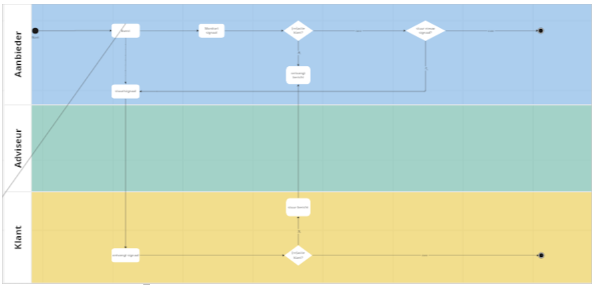
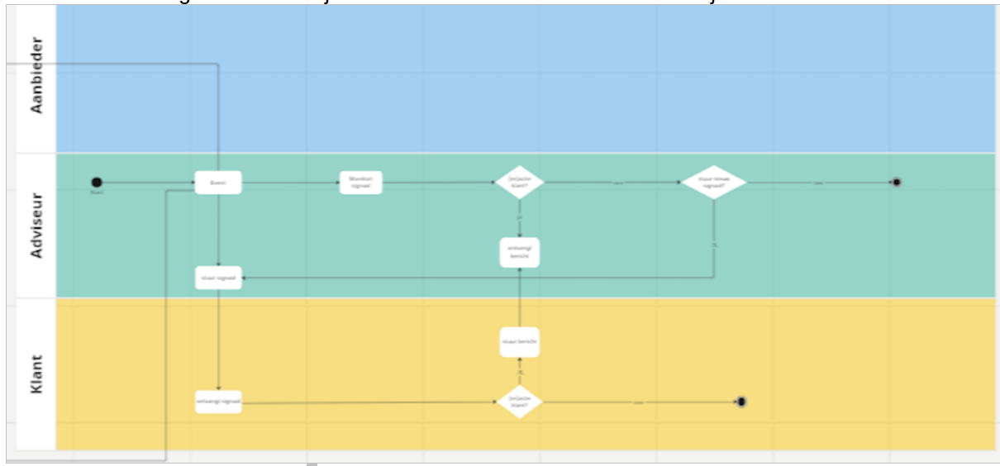

Dit is een werkversie die op elk moment kan worden gewijzigd, verwijderd of vervangen door andere documenten. Het is geen door het TO goedgekeurde consultatieversie.
1. Context
Dit onderdeel is niet normatief.
1.1 Verzoek van Doccle
Doccle heeft bij SIVI het verzoek neergelegd tot standaardisatie van gebeurtenissen en signalen. Dit verzoek richt zich op het standaardiseren van triggers/events (bijv. levensgebeurtenissen) en bijbehorende acties. ANVA werkt mee in dit traject.
Tijdens een gebeurtenis (van de persoon zelf of een persoon in zijn/haar omgeving) moet een consument vaak allerlei acties uit (laten) voeren. De wens is dat (bijvoorbeeld) een adviseur of verzekeraar deze acties eenvoudig en gestandaardiseerd onder de aandacht van de consument kan brengen middels een signaal.
1.2 Standaardisatie met mogelijkheid tot eigen invulling
Het idee van gestandaardiseerde acties en gebeurtenissen ligt in lijn met het stellen van profielvragen. Net zoals sprake is van standaard-profielvragen, kan ook sprake zijn van standaard-acties of -gebeurtenissen. Daarnaast wil een adviseur (of diens softwareleverancier) zelf (maatschappij)specifieke acties of gebeurtenissen kunnen toevoegen. De wens is dan ook om de structuur van een signaal te standaardiseren, als ook de meest generieke gebeurtenissen en acties op te nemen in de standaard. Partijen kunnen specifieke(re) gebeurtenissen en acties dan wel volgens de structuur communiceren, maar op bepaalde punten met eigen invulling.
1.3 Voorbeelden acties en gebeurtenissen
Enkele voorbeelden van mogelijke acties in het geval van:
Zie ook hoofdstuk 2 voor de vertrekpunten en definities van gebeurtenissen, acties en signalen.
1.4 Doel
Deze notitie geeft een opzet voor het standaardiseren van gebeurtenissen en acties, als ook een berichtstructuur voor het uitwisselen van signalen om zulke gebeurtenissen en acties uit te wisselen of te registreren.
Noot: notie
SIVI gaat voor haar standaarden altijd uit van een zo generiek mogelijke invulling van de standaard. De notitie en uitbreiding van de standaard zullen dan ook gebeurtenissen in de ruimste zin van het woord faciliteren. Specifiek levensgebeurtenissen uit het oorspronkelijke verzoek van Doccle/ANVA zijn een specifieke invulling hiervan. In de voorbeelden in deze notitie zullen levensgebeurtenissen wel de leidraad vormen.
1.5 Doelgroep
Ontwikkelaars van toepassingen waarbij het uitwisselen/registreren van signalen rondom gebeurtenissen en bijbehorende acties, waarde toevoegt voor de consument, adviseur of aanbieder.
2. Vertrekpunten
2.1 Wat is een signaal?
Een signaal is een bericht vanuit een partij naar een andere partij naar aanleiding van een gebeurtenis met het verzoek om actie te ondernemen.
Bijvoorbeeld: een adviseur of verzekeraar stuurt, omdat een klant 18 jaar is geworden, het verzoek om de betaalgegevens te updaten. Een signaal kan ook vanuit de consument komen, wanneer deze een gebeurtenis initieert – bijvoorbeeld voor het doorgeven van een verhuizing.
2.2 Wat zijn gebeurtenissen en welke soorten gebeurtenissen onderkennen we?
Als uitgangspunt voor deze notitie hanteren we twee soorten gebeurtenissen:
Levensgebeurtenissen: gebeurtenissen in het leven van de consument die mogelijk acties vereisen. Voorbeelden: 18 jaar worden, overlijden, scheiding, verhuizing.
Servicegerelateerde gebeurtenissen: gebeurtenissen met betrekking op de dienstovereenkomst tussen consument en aanbieder die mogelijk acties vereisen. Voorbeelden: aflopen rentevastperiode, premieafschrijving, einde servicecontract.
2.3 Wat zijn acties?
Een actie is een taak die een partij moet uitvoeren naar aanleiding van een of meer gebeurtenissen. Bijvoorbeeld het updaten van de betaalgegevens (actie) wanneer de premieafschrijving gaat plaatsvinden (servicegerelateerde gebeurtenis), of het aanvragen van een zorgverzekering (actie) wanneer de consument 18 jaar wordt (levensgebeurtenis).
2.4 Use cases
Voor deze notitie zijn vanuit Doccle en ANVA drie use cases opgesteld. Deze vind je in de bijlagen, inclusief voorbeelduitwerkingen in de voor SIVI AFS opgestelde denkrichting van deze notitie.
3. SIVI AFS
3.1 Aansluiting op SIVI AFS
Binnen SIVI AFS bestaat nog geen modellering voor gebeurtenissen en/of acties. Middels deze notitie stelt SIVI voor om de volgende zaken toe te voegen aan SIVI AFS:
Berichtstructuur voor het uitwisselen/registreren van signalen
Entiteiten en attributen voor het uitwisselen/registreren van gebeurtenissen en bijbehorende acties
Codelijst voor generieke levensgebeurtenissen
Codelijst voor generieke servicegerelateerde gebeurtenissen
Codelijst voor generieke acties
De volgende zaken zal SIVI niet toevoegen aan SIVI AFS:
Codelijst voor specifieke gebeurtenissen: specifieke gebeurtenissen, zoals de aanschaf van een nieuwe laptop, zal SIVI niet toevoegen aan de hierboven voorgestelde codelijst van generieke gebeurtenissen. Wel biedt de berichtstructuur voor het uitwisselen/registreren van signalen een gestandaardiseerde manier om zulke specifieke gebeurtenissen te communiceren. Partijen kunnen specifieke gebeurtenissen dan zelf definiëren binnen de kaders en context van SIVI AFS.
Codelijst voor specifieke acties: specifieke acties, zoals het kopen van een verjaardagstaart wanneer iemand jarig is, zal SIVI niet toevoegen aan de hierboven voorgestelde codelijst van generieke acties. Wel biedt de berichtstructuur voor het uitwisselen/registreren van signalen een gestandaardiseerde manier om zulke specifieke acties te communiceren. Partijen kunnen specifieke acties dan zelf definiëren binnen de kaders en context van SIVI AFS.
3.2 SIVI AFS signal-entity
Voor het opnemen van gegevens in het signaalbericht heeft SIVI de signal-entiteit toegevoegd aan de datacatalogus van AFD 2.0. De belangrijkste attributen binnen de signal-entiteit zijn de volgende:
Attribuut
Omschrijving
Datatype
Codelijst
entityType
Standaardattribuut voor elke entiteit die het entiteitstype van de entiteit verder specificeert. Keuze uit ‘lifeEvent’ en ‘serviceEvent’.
string
partyRef
Verwijzing naar de partij op wie het signaal van toepassing is.
[string]
policyRef
Verwijzing naar de polis waarop het signaal van toepassing is.
[string]
lifeEventType
Code van het lifeEvent (nieuwe codelijst).
string
AFDLEV
serviceEventType
Code van het serviceEvent (nieuwe codelijst).
string
AFDSEV
eventDescription
Omschrijving van het event.
string
companyNameDescription
Naam van de betrokken maatschappij.
string
NB: SIVI voegt in eerste instantie twee entityTypes toe onder signal, te weten ‘lifeEvent’ en ‘serviceEvent’. Niet alle attributen zijn beschikbaar onder alle entityTypes. Op aanvraag kan SIVI attributen toevoegen en/of beschikbaar stellen onder gewenste entityTypes.
3.3 SIVI AFS action-entity
Voor het definiëren van acties binnen het signaalbericht heeft SIVI ook de action-entiteit toegevoegd aan de datacatalogus van AFD 2.0. De belangrijkste attributen binnen de action-entiteit zijn de volgende:
Attribuut
Omschrijving
Datatype
Codelijst
entityType
Standaardattribuut voor elke entiteit die het entiteitstype van de entiteit verder specificeert. Voor nu is alles van het entityType ‘default’.
string
actionType
Code van het soort actie (nieuwe codelijst).
string
AFDACT
actionDescription
Omschrijving van de actie.
string
priority
Prioriteit van de actie.
integer
actionExplanation
Verdere toelichting op de actie.
string
url
Eventuele link naar meer info of het uitvoeren van de actie.
string
3.4 Codelijsten gebeurtenissen
Voor generieke gebeurtenissen voegt SIVI twee codelijsten toe aan de datacatalogus van AFD 2.0. Een voor levensgebeurtenissen (AFDLEV) en een voor servicegerelateerde gebeurtenissen (AFDSEV).
Voorstel voor codelijst AFDLEV:
Noot: notie
Dit is een eerste opzet. Aan de hand van input van Doccle en ANVA zal SIVI deze codelijst uitbreiden alvorens deze definitief te maken.
Code
Omschrijving
01
Samenwonen
02
Trouwen
03
Scheiden
04
Samenlevingscontract afsluiten
05
Kinderen krijgen
06
Uit huis gaan
07
Overlijden
08
Overlijden partner
09
Met pensioen gaan
10
18 jaar worden
11
Gaan studeren
12
Gaan studeren / stagelopen in buitenland
13
Tussenjaar nemen
14
Verhuizen
15
Woning (ver)bouwen
16
ZZP’er worden
17
Van baan/werkgever wisselen
18
Werkloos worden
19
Erven
20
Pleegouder worden
99
Overig
Voor specifieke gebeurtenissen kunnen partijen code 99 kiezen en middels het attribuut lifeEventDescrption het evenement verder specificeren.
Voorstel voor codelijst AFDSEV:
Noot: notie
Dit is een eerste opzet. Aan de hand van input van Doccle en ANVA zal SIVI deze codelijst uitbreiden alvorens deze definitief te maken.
Code
Omschrijving
01
Document ontvangen
02
Betaling doen
03
Ondertekenen
04
Aflopen rentevastperiode
05
Herijking opstal
06
Nazorg testament
07
Nazorg inboedelverzekering
08
Controle CRM-gegevens
09
Aankondiging premie-afschrijving
99
Overig
Voor specifieke gebeurtenissen kunnen partijen code 99 kiezen en middels het attribuut serviceEventDescrption het evenement verder specificeren.
3.5 Codelijst acties
Voor generieke acties voegt SIVI de codelijst AFDACT toe aan de datacatalogus van AFD 2.0:
Noot: notie
Dit is een eerste opzet. Aan de hand van input van Doccle en ANVA zal SIVI deze codelijst uitbreiden alvorens deze definitief te maken.
Code
Omschrijving
01
DigiD aanvragen
02
Zorgverzekering afsluiten
03
Studiefinanciering aanvragen
04
Zorgtoeslag aanvragen
05
Aangifte inkomstenbelasting
06
Orgaandonatie vastleggen
07
Inschrijven huurwoning
08
Aansprakelijkheidsverzekering afsluiten
09
Inboedelverzekering afsluiten
10
Reisverzekering afsluiten
11
Uitvaartverzekering afsluiten
12
Aangifte van overlijden doen
13
Uitvaart regelen
14
Bankrekening blokkeren
15
Overlijden melden bij hypotheekverstrekker
16
Abonnementen opzeggen
17
Abonnementen wijzigen
18
Contact opnemen met financieel adviseur
19
Betaalgegevens updaten
20
Adresgegevens wijzigen
99
Overig
Voor specifieke acties kunnen partijen code 99 kiezen en middels het attribuut actionDescrption het action verder specificeren.
3.6 SIVI AFS signalStructure
Voor het uitwisselen en/of registreren van signalen heeft SIVI de signalStructure opgesteld. Deze structure kan bestaan uit de volgende entiteiten op het hoogste niveau:
Entiteit
Cardinaliteit
Omschrijving
commonFunctional
1..n
Functionele metadata over het bericht
commonTechnical
0..n
Technische metadata over het bericht
signal
1..n
Hoofdentiteit van het signaalbericht
document
0..n
Optionele informatie over meegezonden documenten
process
0..n
Optionele procesinformatie
Binnen de signal-entiteit kunnen meerdere action-entiteiten genest worden opgenomen die gekoppeld zijn aan de gebeurtenis zoals gedefinieerd in de signal-entiteit.
3.7 Uitbreidbaarheid en releaseritme
De SIVI-standaarden zijn op maandbasis uitbreidbaar. Aanvragen voor wijzigingen/uitbreidingen gaan via het wijzigingsformulier, te downloaden via de website van SIVI AFS (rechts in kader onder ‘Vragen en wijzigingsverzoeken’). Het advies is rekening te houden met de releaseplanning.
4. Voorbeelden
4.1 Use case 1: servicegerelateerde gebeurtenis
In deze use case initieert de aanbieder (bijv. verzekeraar, adviseur) de servicegerelateerde gebeurtenis. Bijvoorbeeld een verzekeraar die, in verband met naderende premie-afschrijving, de consument mailt met het verzoek om de betaalgegevens te controleren.

Figuur 1aanbieder initieert event vanuit servicegerelateerde gebeurtenis
In onderstaande afbeelding vind je een voorbeeld hiervan: aanbieder Allianz stuurt naar aanleiding van een aanstaande premie-afschrijving de consument een e-mail, met oproep tot het controleren van diens betaalgegevens. De aanstaande premie-afschrijving is hierin de (servicegerelateerde) gebeurtenis, en het controleren van de betaalgegevens de actie.
Bovenstaand voorbeeld kan als volgt in de SIVI AFS signalStructure worden gecommuniceerd of vastgelegd:
4.2 Use case 2: levensgebeurtenis, initiatief bij aanbieder
Ook in deze use case initieert de aanbieder (bijv. verzekeraar, adviseur) het signaal, maar dit keer vanuit een levensgebeurtenis. Bijvoorbeeld wanneer een consument 18 jaar wordt.

Figuur 3aanbieder initieert event vanuit levensgebeurtenis
In dit voorbeeld gaat het dus om een lifeEvent waarbij de consument 18 jaar is geworden. Als bijbehorende acties hebben we hiervoor gemodelleerd dat de consument een DigiD moet aanvragen, een zorgverzekering moet afsluiten en een taart moet kopen. Die laatste actie is een voorbeeld van een niet-gestandaardiseerde actie en staat dus niet in de codelijst AFDACT.
4.3 Use case 3: levensgebeurtenis, initiatief bij consument
Als laatste use case opnieuw een signaalbericht naar aanleiding van een levensgebeurtenis, maar nu met het initiatief bij de consument. In dit voorbeeld een consument die gaat verhuizen en doorgeeft aan de aanbieder dat hij/zij gaat verhuizen.
Figuur 4consument initieert event vanuit levensgebeurtenis
Ook dit is te modelleren met de SIVI AFS signalStructure, waarmee de consument aan de aanbieder aangeeft dat deze het proces moet starten dat hoort bij een adreswijziging. (NB: De adreswijziging zelf komt dus in een later stadium, het gaat hier puur om het signaal.)
5. Conformiteit
Naast onderdelen die als niet normatief gemarkeerd zijn, zijn ook alle diagrammen, voorbeelden, en noten in dit document niet normatief. Verder is alles in dit document normatief.